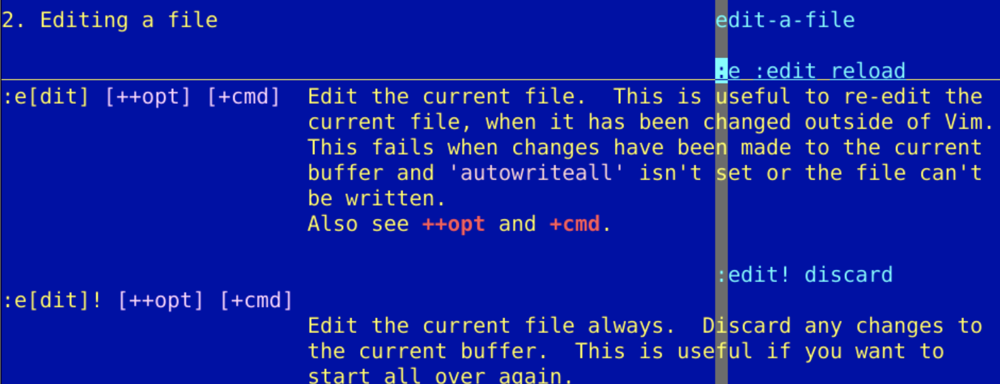
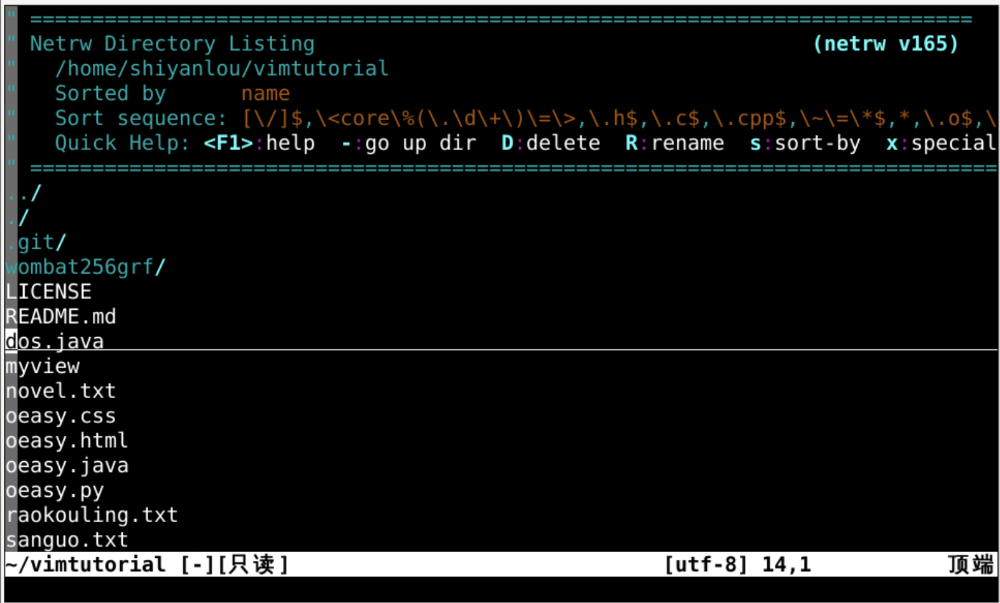
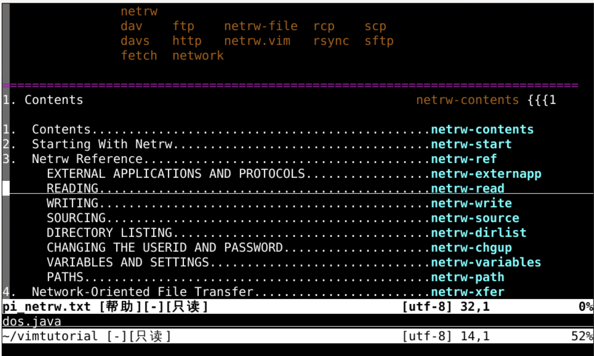
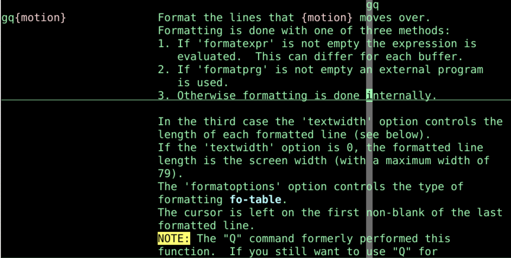
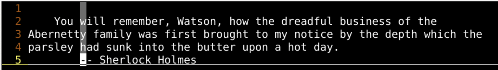
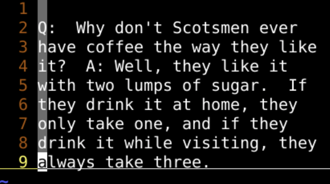
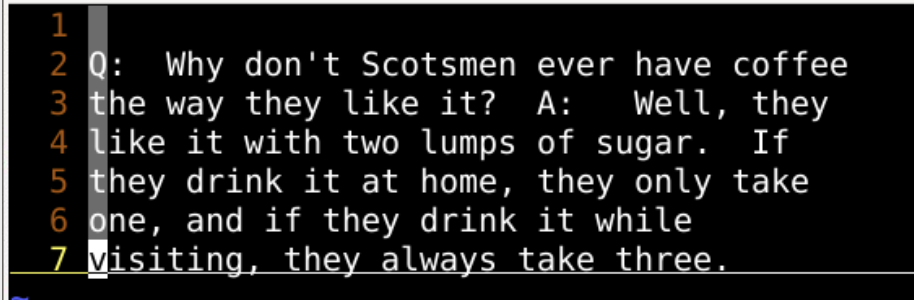
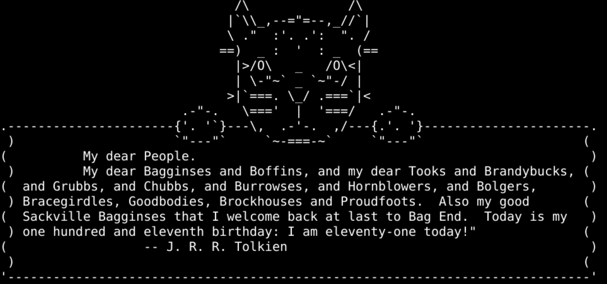
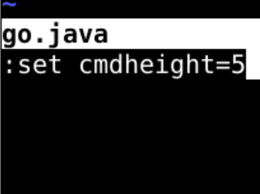
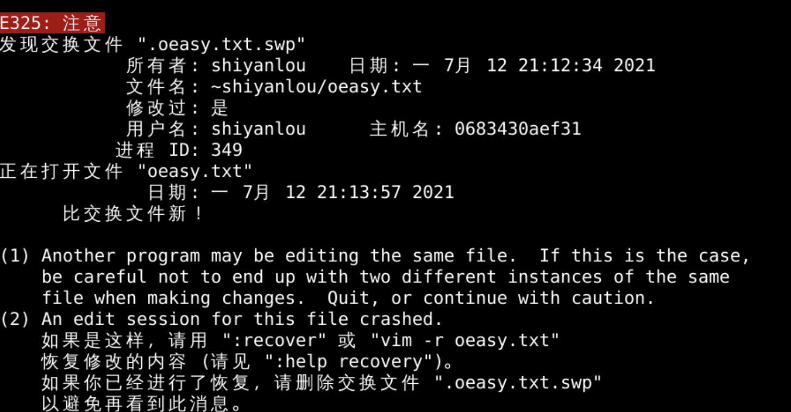

:history:his -5:his sshell 里面vi oeasy.txtvi还可以再打开文件吗？:e oeasy.txtoeasy.txte意味着edit:h :e看到手册！
:!ls看到相应的名字:e .. 代表当前目录:pwd 可以看到当前目录vi 的目录
:h netrw
- 向上一层D DeleteR Renames sort 切换模式x 特殊 在File Manager中打开!mkdir oeasye oeasy.rsoeasy.txt:r 把别的文件读取进来进行读取oeasy.css 在当前目录下:r ~/.vimrc:h :r r意味着read:9r oeasy.css 就是在第9行下面插入完整的 oeasy.css :r !ls!ls 的输出结果流到当前行之下:r !ls -lahrange:29r !ls -lah:!sed -n 1,3p oeasy.css:r !sed -n 1,3p oeasy.css:15r !sed -n 1,3p oeasy.css:!ls -lah | sed -n 4,9p:r !ls -lah | sed -n 4,9p:9r !ls -lah | sed -n 4,9p:h gq
#先更新源
sudo apt update
#fortune可以输出谚语 在<linux>教程那部分有介绍
sudo apt install fortune
#使用fortune生成谚语
fortune -l
#进入vi
:r !fortune -l
:set nopaste:set textwidth=30gq3kgq 控制宽度3k 是 {motion}gq3jgq 控制宽度3j 是 {motion}gq3回车
vi -u NONE的情况下:set textwidth=50gq8k
#先安软件 fortune、boxes、lolcat 在<linux>教程那部分有介绍
sudo apt install fortune boxes catlol
#使用fortune生成谚语
fortune -l
#把谚语通过管道送入boxes
fortune -l ｜ boxes -d cat
#改成彩色
fortune -l | boxes -d cat | lolcat
#进入vi
:r !fortune -l | boxes -d cat

:set cmdheight=3增大命令区高度
- 确实可以增加命令区高度 - 不过，这并不能从根本上解决问题 - 回忆一下 - 正常模式下可以使用 Q 进入Ex命令行模式 - 然后:visual切换回来
- 或者正常模式下q:进入搜索命令的模式
- 搜到后，修改好，回车执行
:h :w :w 意味着 write:w o3z.txt 把当前文件内容写到 o3z.txt:3,8w o3z.txt把第3到第8行写到 o3z.txto3z.txt不存在怎么办？:w! o3z 先建立文件再写入:w >> o3z.txt 把内容追加写入到 o3z.txtvi oeasy.txtls -a .oeasy.txt.*oeasy.txt不存在vi oeasy.txtoeasy.txtswp是有的vi -r oeasy.txtoeasy.txtoeasy.txt
git之类的 版本控制工具e,edit:e oeasy.txt:e .:r,read:3r o2z.txt :9r !ls -lah :r !sed -n 1,3p oeasy.css:6r !sed -n 1,3p oeasy.css:w,write:w o3z.txt :3,8w o3z.txt :w o3z.txt >> :w! o3z